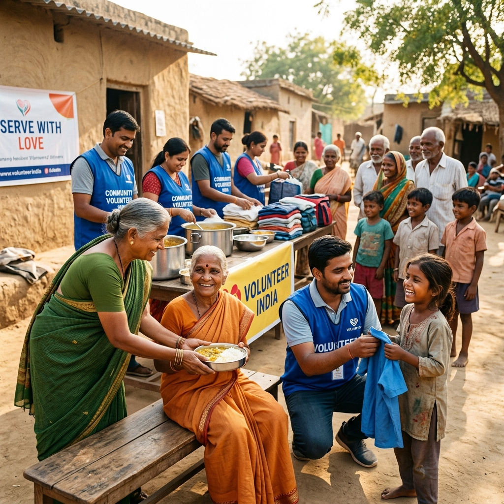

Social Service

Project SEVA
Dedicated to alleviating hunger and poverty. Our volunteers distribute nutritious meals and ration kits daily to daily wagers, orphans, and homeless communities who face severe food insecurity.
Social Impact
Reduces nutritional gaps and provides immediate survival security to marginalized families.